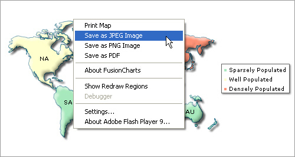
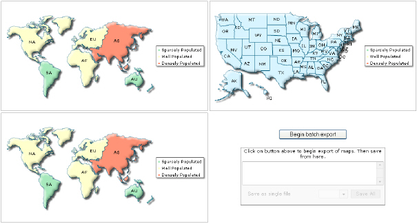

| Export maps to image/PDF |
|
All maps in the FusionMaps XT pack can be configured to be exported as an image (JPEG or PNG) or PDF. The export can be handled either at client-side or at server-side. Exported image or PDF can be saved at client-side or stored on the server. The image below shows how map export is initiated at client-side from the map's context menu. The initiation can also be done using JavaScript APIs. By default, these menu items do not appear in the map. You'll need to configure the export options and handlers to make the map ready for exporting. In this section, we briefly explain all export options.  FusionMaps XT, by itself, cannot directly export the maps as images. It needs assistance either from server-side scripts, or other client side Flash movies (in Flash Player 10). FusionMaps XT sends the bitmap snapshot of its map to these objects, which in turn convert them into an image or PDF. These objects are called FusionCharts Export Handlers. The export handlers come in two flavors: Server-side Handlers & Client-side Handler. Server-side Export Handlers The server-side export handlers help you export FusionMaps XT as images or PDFs with the help of scripts that are placed on your servers. We provide ready-to-use scripts for ASP.NET, PHP (uses GD and zlib library), Ruby on Rails (uses RMagick and zlib) and Java. These scripts accept compressed bitmap data from FusionMaps XT (over HTTP or HTTPS) and convert the same into images/PDFs. Post conversion, you have two options:
Note: Starting FusionMaps XT v3.3.0 JavaScript maps can be exported and saved to a server disk. To do so, you need to configure your own server. The sever should support PHP and JAVA (1.3 or above). Also, you need to place the FusionCharts PHP export handler and Apache Batik SVG Rasterizer library in your server. Client-side Export Handlers The client-side FusionCharts Export Component, as the name suggests, helps you bypass all server scripts and save the maps as images or PDFs at the client side. You will typically use client-side export when your server does not support any of the technologies mentioned in server-side exporting or you do not want to transfer data between your client and server (which in turn will make the export process faster). Client-side exporting is done using FusionCharts Export Component SWF file (needs Flash Player 10) and FusionCharts Export Javascript class (FusionChartsExportComponent.js). In both client and server side exports, you can configure the output formats (PDF/JPEG/PNG) that you wish to make available from your context menu along with the cosmetics of the export dialog box itself. You can also make your own custom export panels (with custom buttons, look and feel) that are displayed along with the map in a <div>, and then connect the same to the map's export handlers. Client-side Batch Export You can also use the client side Export handler to export ALL the maps present in a Web page upon a single click. This is called batch exporting. The exported files for each map can then either be saved individually, or all the exported maps can be saved as a single file:  |
| Setting up map for export |
|
To enable export feature of the map you need to add export settings in map data (XML/JSON). You need to set exportEnabled XML map attribute or JSON map property to 1. You also need to set whether to use client or server side export using exportAtClient attribute and finally set the exportHandler. |
| How to setup map data for export ? |
<map borderColor='005879' fillColor='D7F4FF' numberSuffix=' Mill.' includeValueInLabels='1' labelSepChar=': ' baseFontSize='9' exportEnabled='1' exportAtClient='0' exportHandler='index.php'> {
|
In this example, we're using the server-side Export Handler (index.php) to assist FusionMaps XT in export of map. |
| Features provided in export |
|
Export feature provides a wide range of export options to explore. You can:
For more details on each export feature, please go through Exporting as Image/PDF section. Please note that there are a few limitations of exporting pure JavaScript maps as listed below:
When rendered using JavaScript (HTML5), there is only one mode of export - at server-side. By default, JavaScript (HTML5) maps use FusionCharts server to get exported image. However you can place the PHP and JAR files on your servers and then over-ride the URL. |